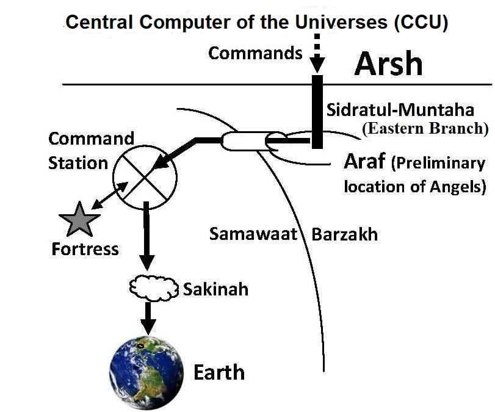

Introduction
ভূমিকা
The Surah discusses the domains of humans and jinns, as well as their antagonism. It narrates the endeavors of the Prophets and calls for wholehearted acceptance of the Truth for salvation to the Jannaat.
সূরাটি মানুষ এবং জিনদের ডোমেইন এবং সেইসাথে তাদের বৈরিতা নিয়ে আলোচনা করে। এটি নবীদের প্রচেষ্টার বর্ণনা করে এবং জান্নাতের মুক্তির জন্য সত্যকে সর্বান্তকরণে গ্রহণ করার আহ্বান জানায়।
Flowchart
ফ্লোচার্ট
Segment 1: The Order of the Future Universes
সেগমেন্ট 1: ভবিষ্যত মহাবিশ্বের আদেশ
Section 1 [Verse 1-5]: The Lord Eastern Section 2 [Verse 6-10]: Rebellious Jinns Section 3 [Verse 11-12]: Amazing Thing Section 4 [Verse 13-18]: Humans that do not pay heed to Admonition Section 5 [Verse 19-39]: At the outset of an endless Journey Section 6 [Verse 40-74]: Which is Better?
অধ্যায় 1 [আয়াত 1-5]: লর্ড ইস্টার্ন সেকশন 2 [শ্লোক 6-10]: বিদ্রোহী জিনস বিভাগ 3 [আয়াত 11-12]: আশ্চর্যজনক জিনিস ধারা 4 [আয়াত 13-18]: মানুষ যারা উপদেশে মনোযোগ দেয় না ধারা 5-9 এর শেষের দিকে ধারা 6 [আয়াত 40-74]: কোনটি ভাল?
Segment 2: Old Prophets and Now
সেগমেন্ট 2: পুরাতন নবী এবং এখন
Section 7 [Verse 75-82]: Noah Section 8 [Verse 83-113]: Abraham Section 9 [Verse 114-122]: Moses and Aaron Section 10 [Verse 123-132]: Elias Section 11 [Verse 133-138]: Lut Section 12 [Verse 139-148]: Jonah Section 13 [Verse 149-166]: Pagans with Wrong Ideas Section 14 [Verse 167-179]: Soon shall they See Section 15 [Verse 180-182]: Glory to Lord
অধ্যায় 7 [পদ 75-82]: নোহ ধারা 8 [আয়াত 83-113]: আব্রাহাম অধ্যায় 9 [আয়াত 114-122]: মূসা এবং হারুন অধ্যায় 10 [আয়াত 123-132]: ইলিয়াস অধ্যায় 11 [আয়াত 83-132] 139-148]: জোনাহ ধারা 13 [আয়াত 149-166]: ভুল ধারণা সহ পৌত্তলিক ধারা 14 [আয়াত 167-179]: শীঘ্রই তারা 15 ধারা দেখতে পাবে [আয়াত 180-182]: প্রভুর গৌরব।
Tafsir of the Surah Segment-1 The Order of the Future Universes
সূরা সেগমেন্ট-১ এর তাফসীর ভবিষ্যত মহাবিশ্বের আদেশ
Section 1 of Chapter 37 [Verse1-5]: The Lord Eastern
অধ্যায় 37 এর অধ্যায় 1 [Verse1-5]: লর্ড ইস্টার্ন
By those lined in rows and those who drive strongly and those who recite the Message: ―Verily, verily, your God is one, Lord of the Skies and Lands and all between them (this universe), and the Lord Eastern (Eastern Super Space)!‖
যারা সারিবদ্ধভাবে সারিবদ্ধ এবং যারা দৃঢ়ভাবে গাড়ি চালায় এবং যারা এই বার্তাটি পাঠ করে: "নিশ্চয়ই, সত্যই, তোমাদের ঈশ্বর এক, আকাশ ও ভূমি এবং তাদের মধ্যবর্তী সমস্ত কিছুর (এই মহাবিশ্ব) এবং প্রভু ইস্টার্ন (ইস্টার্ন সুপার স্পেস)!
Remarks:
মন্তব্য:
Araf, Samawaat, Jannaat, and Barzakh are all contained within a Super-Space, where the entire Samawaat (this universe) is located in the East (Eastern Super Space). This arrangement is visualized in the following figure:
আরাফ, সামাওয়াত, জান্নাত এবং বারজাখ সবই একটি সুপার-স্পেসের মধ্যে রয়েছে, যেখানে সমগ্র সামওয়াত (এই মহাবিশ্ব) পূর্বে (ইস্টার্ন সুপার স্পেস) অবস্থিত। এই বিন্যাসটি নিম্নলিখিত চিত্রে কল্পনা করা হয়েছে:
FIGURE 37.1: Arsh and Super-Space Allah sustains everything from its foundation level. He has the power to do or undo anything instantly. However, it does not align with His dignity to use His direct power against a tiny creature. Instead, He controls one creature through another mainly when they confront each other, and governs everything through angelic system He has created. [Allah uses His direct power to control the inert creations of the universe as a whole, as discussed in Chapter-1.] The main system for controlling living creatures consists of the following: a. The CCU / Central Computer of the Universes: It is located in the Arsh. It is the Head of a huge Cybernetic System (see figure above). b. The Sidratul-Muntaha: The Sidratul-Muntaha is suspended on the Araf from the Arsh (see figure above). It is based on a massive Server Computer and serves as the central hub of the Cybernetic System. c. The Araf: It is a land elevated beyond the universes (Samawaat and Jannaat) and serves as the primary sanctuary of the angels. d. The Command Stations: The Command Stations are special, planet-like astral objects located within the universe. These serve as terminal establishments of the Cybernetic System, providing shelter for the Archangels of the Skies and the Terminal Server Computers. e. The Fortresses: These are special star-like astral objects located near the Command Stations. They serve as terminal sanctuaries for tasked angels, who await deployment to their designated job stations. f. The Main Channels: The main channels, descending from the Araf, connect the Command Stations scattered across the universes and independent domains, such as Illiyin and Sijjin. g. Sakinah: From the Command Station of a Sky, angels and ruhs are sent to their job stations in small groups by Sakinah. They resemble clouds of angels, hovering over their designated objects (job stations).

চিত্র 37_1 / Figure 37_1
চিত্র 37.1: আরশ এবং সুপার-স্পেস আল্লাহ তার ভিত্তি স্তর থেকে সবকিছুকে টিকিয়ে রাখেন। তিনি তাৎক্ষণিকভাবে কিছু করতে বা পূর্বাবস্থায় ফিরিয়ে আনার ক্ষমতা রাখেন। যাইহোক, এটি একটি ক্ষুদ্র প্রাণীর বিরুদ্ধে তাঁর প্রত্যক্ষ ক্ষমতা ব্যবহার করা তাঁর মর্যাদার সাথে সারিবদ্ধ নয়। পরিবর্তে, তিনি একটি প্রাণীকে অন্যের মাধ্যমে নিয়ন্ত্রণ করেন প্রধানত যখন তারা একে অপরের মুখোমুখি হয়, এবং তিনি সৃষ্ট স্বর্গীয় ব্যবস্থার মাধ্যমে সবকিছু পরিচালনা করেন। [আল্লাহ সমগ্র মহাবিশ্বের জড় সৃষ্টিকে নিয়ন্ত্রণ করার জন্য তাঁর প্রত্যক্ষ ক্ষমতা ব্যবহার করেন, যেমনটি অধ্যায়-১-এ আলোচনা করা হয়েছে।] জীবন্ত প্রাণীদের নিয়ন্ত্রণের প্রধান ব্যবস্থা নিম্নলিখিতগুলি নিয়ে গঠিত: ক. মহাবিশ্বের সিসিইউ / কেন্দ্রীয় কম্পিউটার: এটি আরশে অবস্থিত। এটি একটি বিশাল সাইবারনেটিক সিস্টেমের প্রধান (উপরের চিত্রটি দেখুন)। খ. সিদরাতুল মুনতাহা: সিদরাতুল মুনতাহা আরশ থেকে আরাফে স্থগিত (উপরের চিত্র দেখুন)। এটি একটি বিশাল সার্ভার কম্পিউটারের উপর ভিত্তি করে এবং সাইবারনেটিক সিস্টেমের কেন্দ্রীয় হাব হিসাবে কাজ করে। গ. আরাফ: এটি মহাবিশ্বের (সামাওয়াত এবং জান্নাত) ছাড়িয়ে উঁচু একটি ভূমি এবং ফেরেশতাদের প্রাথমিক আশ্রয়স্থল হিসাবে কাজ করে। d কমান্ড স্টেশন: কমান্ড স্টেশনগুলি মহাবিশ্বের মধ্যে অবস্থিত বিশেষ, গ্রহের মতো জ্যোতিষ বস্তু। এগুলি সাইবারনেটিক সিস্টেমের টার্মিনাল স্থাপনা হিসাবে কাজ করে, যা আকাশের আর্চেঞ্জেল এবং টার্মিনাল সার্ভার কম্পিউটারের জন্য আশ্রয় প্রদান করে। e দুর্গগুলি: এগুলি কমান্ড স্টেশনগুলির কাছে অবস্থিত বিশেষ তারার মতো জ্যোতিষ্ক বস্তু। তারা দায়িত্বপ্রাপ্ত ফেরেশতাদের জন্য টার্মিনাল অভয়ারণ্য হিসাবে কাজ করে, যারা তাদের মনোনীত জব স্টেশনে স্থাপনের জন্য অপেক্ষা করে। চ প্রধান চ্যানেল: আরাফ থেকে নেমে আসা প্রধান চ্যানেলগুলি মহাবিশ্ব জুড়ে ছড়িয়ে ছিটিয়ে থাকা কমান্ড স্টেশন এবং ইল্লিয়িন এবং সিজ্জিনের মতো স্বাধীন ডোমেনগুলিকে সংযুক্ত করে। g সাকিনাহ: একটি আকাশের কমান্ড স্টেশন থেকে, ফেরেশতা এবং রুহকে সাকিনাহ দ্বারা ছোট দলে তাদের কাজের স্টেশনে পাঠানো হয়। তারা স্বর্গদূতদের মেঘের মতো, তাদের মনোনীত বস্তুর (চাকরির স্টেশন) উপর ঘোরাফেরা করে।
চিত্র 37_1 / Figure 37_1
FIGURE 37.2: Cybernetic System

চিত্র 37_2 / Figure 37_2
চিত্র 37.2: সাইবারনেটিক সিস্টেম
চিত্র 37_2 / Figure 37_2
The Cybernetic System, including the CCU, Sidratul- Muntaha, Command Stations, Fortresses, and Channels, controls the living creatures through the angels, according to the fates confirmed by Allah. This system is discussed in detail in Section 9 of Chapter 6. The jinns and their supporting creatures are made of antimatter. They are the primary residents of the Samawaat (this universe) and are powerful beings. Controlling them by angels is a difficult task. Moreover, one of the jinns served as a chief angel, known as Azazil (Light Bearer). This name indicates that he led the angels working for Sidratul-Muntaha. However, he refused to obey an order from Allah, resulting in his rejection and fall, after which he was named Iblis (Satan). He possesses great knowledge and is now the leader of the satanic jinns. His leadership has made controlling the rebellious jinns even more difficult. The jinns are capable of flying through the Skies. The unruly jinns attempt to invade the Araf through the channels. They also seek to intrude into the protected zones of the Skies, such as the Command Stations and Fortresses. However, the angels, lined in rows, stand guard against them. Thus, they declare: ―Verily, verily, your God is one, Lord of the ‗Skies and Lands and all between them‘ (this universe), and the Lord Eastern!‖
সিসিইউ, সিদরাতুল-মুনতাহা, কমান্ড স্টেশন, দুর্গ এবং চ্যানেল সহ সাইবারনেটিক সিস্টেম, আল্লাহর দ্বারা নিশ্চিতকৃত ভাগ্য অনুসারে, ফেরেশতাদের মাধ্যমে জীবন্ত প্রাণীদের নিয়ন্ত্রণ করে। এই ব্যবস্থাটি অধ্যায় 6 এর অধ্যায় 9 এ বিশদভাবে আলোচনা করা হয়েছে। জিন এবং তাদের সহায়ক প্রাণীরা প্রতিপদার্থ দিয়ে তৈরি। তারা হল সামওয়াতের (এই মহাবিশ্বের) প্রাথমিক বাসিন্দা এবং শক্তিশালী সত্তা। ফেরেশতাদের দ্বারা তাদের নিয়ন্ত্রণ করা একটি কঠিন কাজ। অধিকন্তু, জিনদের মধ্যে একজন প্রধান ফেরেশতা হিসাবে কাজ করেছিল, যা আজাজিল (আলো বহনকারী) নামে পরিচিত। এই নামটি নির্দেশ করে যে তিনি সিদরাতুল মুনতাহার জন্য কাজ করা ফেরেশতাদের নেতৃত্ব দিয়েছেন। যাইহোক, তিনি আল্লাহর একটি আদেশ মানতে অস্বীকার করেছিলেন, যার ফলে তার প্রত্যাখ্যান এবং পতন হয়েছিল, যার পরে তার নাম রাখা হয়েছিল ইবলিস (শয়তান)। তিনি মহান জ্ঞানের অধিকারী এবং এখন শয়তানী জিনদের নেতা। তার নেতৃত্ব বিদ্রোহী জিনদের নিয়ন্ত্রণ করা আরও কঠিন করে তুলেছে। জিনরা আকাশে উড়তে সক্ষম। উচ্ছৃঙ্খল জিনরা চ্যানেলের মাধ্যমে আরাফে আক্রমণ করার চেষ্টা করে। তারা আকাশের সুরক্ষিত অঞ্চল যেমন কমান্ড স্টেশন এবং দুর্গগুলিতে অনুপ্রবেশ করতে চায়। যাইহোক, ফেরেশতারা সারিবদ্ধভাবে তাদের বিরুদ্ধে পাহারা দেয়। এইভাবে, তারা ঘোষণা করে: "নিশ্চয়ই, সত্যই, তোমাদের ঈশ্বর এক, 'আকাশ ও ভূমি এবং তাদের মধ্যবর্তী সমস্ত' (এই মহাবিশ্ব) এবং পূর্বের প্রভু!'
Section 2 of Chapter 37 [Verse 6-10]: Rebellious Jinns
অধ্যায় 37 এর অধ্যায় 2 [আয়াত 6-10]: বিদ্রোহী জ্বিন
We have indeed decked the Sky of the Earth with the adornment of stars, and guard against every rebellious Jinn; they should not strain their ears in the direction of Exalted Assembly but be cast away from every side, repulsed—for they are under a perpetual penalty—except such as snatch away something by theft, and they are pursued by a flaming fire of piercing brightness. Remarks:
আমরা পৃথিবীর আকাশকে তারার শোভা দিয়ে সজ্জিত করেছি এবং প্রত্যেক বিদ্রোহী জিন থেকে হেফাজত করেছি। তারা তাদের কান উচুঁ সমাবেশের দিকে চাপা দেওয়া উচিত নয় বরং তাদের চারদিক থেকে দূরে সরিয়ে দেওয়া উচিত, বিতাড়িত - কারণ তারা একটি চিরস্থায়ী শাস্তির অধীনে রয়েছে - যেমন চুরি করে কিছু ছিনিয়ে নেওয়ার মতো, এবং ছিদ্রকারী উজ্জ্বলতার জ্বলন্ত আগুনের দ্বারা তাদের তাড়া করা হয়। মন্তব্য:
The ―Exalted Assemblies‖ mentioned in the above verses are ―Command Stations‖ with server computers connected to the Sidratul-Muntaha. There are seven Command Stations in Seven Skies (one for each sky). The Command Stations are planet-like objects and are referred to as ―Lofty Stations‖ in the Quran. There are many fortresses under each Command Station. The fortresses are star-like objects. The angels descending from the Araf are temporarily sheltered in these fortresses. Subsequently, they are sent to Job Stations in smaller groups. The Archangel of a sky resides in the Command Station. He oversees the angels who have descended from the Araf, following the instructions received from the CCU. The System is deliberately discussed in Section-9 of Chapter-6.
উপরের আয়াতগুলিতে উল্লিখিত "উচ্চতর সমাবেশগুলি" হল সিদরাতুল মুনতাহার সাথে সংযুক্ত সার্ভার কম্পিউটারগুলির সাথে "কমান্ড স্টেশন"। সাত আকাশে সাতটি কমান্ড স্টেশন রয়েছে (প্রতিটি আকাশের জন্য একটি)। কমান্ড স্টেশনগুলি গ্রহের মতো বস্তু এবং কুরআনে "উচ্চ স্টেশন" হিসাবে উল্লেখ করা হয়েছে। প্রতিটি কমান্ড স্টেশনের অধীনে অনেকগুলি দুর্গ রয়েছে। দুর্গগুলো তারার মতো বস্তু। আরাফ থেকে অবতরণকারী ফেরেশতাদের সাময়িকভাবে এই দুর্গগুলোতে আশ্রয় দেওয়া হয়। পরবর্তীকালে, তাদের ছোট দলে চাকরি কেন্দ্রে পাঠানো হয়। একটি আকাশের প্রধান দেবদূত কমান্ড স্টেশনে থাকেন। তিনি সিসিইউ থেকে প্রাপ্ত নির্দেশ অনুসরণ করে আরাফ থেকে নেমে আসা ফেরেশতাদের তত্ত্বাবধান করেন। সিস্টেমটি ইচ্ছাকৃতভাবে অধ্যায়-6 এর ধারা-9 এ আলোচনা করা হয়েছে।
Section 3 of Chapter 37 [Verse 11-12]: Amazing Thing
অধ্যায় 37 এর অধ্যায় 3 [পদ 11-12]: আশ্চর্যজনক জিনিস
Just ask their opinion: Are they a stronger creation or whom We have created—indeed We created them from unique gene expressions (tinin lazibin)! Truly you are an amazing thing, while they ridicule.
শুধু তাদের মতামত জিজ্ঞাসা করুন: তারা কি শক্তিশালী সৃষ্টি বা যাদেরকে আমরা সৃষ্টি করেছি - প্রকৃতপক্ষে আমরা তাদের অনন্য জিনের অভিব্যক্তি (তিনিন লাজিবিন) থেকে সৃষ্টি করেছি! সত্যই আপনি একটি আশ্চর্যজনক জিনিস, যখন তারা উপহাস করে।
Remarks:
মন্তব্য:
In the above verses, "tinin" means "lute." A lute is a stringed musical instrument. There are 46 double-helix DNA molecules in the zygote of a human. Each DNA molecule is a six-foot- long polymer (that remains coiled into a microscopic chromosome). A DNA molecule contains innumerable programs in the form of genes, which radiate messages, such as mRNAs or waves of creation, as needed. Thus, a zygote is like a lute with 46 strings, and gene expression is like the music of creation. Therefore, "tinin" is translated in the verse under discussion as "gene expression." In above verse, "lazib" means "to bite / sticky / necessary". In context of the verse, it should mean "unique" (for each human). So, ―tinin lazibin‖ should mean ―unique gene expression.‖ All fish of a species are identical; all birds of a species are identical, but each human is unique. When the fusion of sperm and ovum occurs to produce a zygote, the unique genetic code of a human is formed. Even the nafs of each person is different, which gives each individual a distinct character. For example, some people possess more courage, while others have less. A human possesses an amazing physique, as the verses say: ―Truly, you are an amazing thing…‖ A human has color vision, eyes capable of perceiving a wide spectrum, and hearing that ranges from 20 Hz to 20,000 Hz. He can think, talk, write, and remember. All matter, plants, and animals are useful to him. He enjoys a wide variety of foods and numerous forms of enjoyment. He stands at the receiving end of the universe's products. A star produces gold and silver through painful evolution and explosive processes. And who uses those? It is their women. We are a higher creation than the jinn, but they ridicule us because they are jealous of us: Truly you are an amazing thing, while they ridicule. The jinn are the highest-ranking creatures among those made from anti-matter. Allah created them before us. They are intelligent and possess unique qualities, such as the ability to fly through space and likely requiring minimal support to survive. However, they are simpler in form and lack many of the qualities that humans possess. The jinn are deliberately discussed in Section-3 of Chapter-7.
উপরের আয়াতগুলিতে "তিনিন" অর্থ "লুট"। একটি ল্যুট একটি তারযুক্ত বাদ্যযন্ত্র। একজন মানুষের জাইগোটে 46টি ডাবল-হেলিক্স ডিএনএ অণু রয়েছে। প্রতিটি ডিএনএ অণু একটি ছয় ফুট লম্বা পলিমার (যা একটি মাইক্রোস্কোপিক ক্রোমোজোমে কুণ্ডলীবদ্ধ থাকে)। একটি ডিএনএ অণুতে জিনের আকারে অসংখ্য প্রোগ্রাম থাকে, যা প্রয়োজন অনুসারে এমআরএনএ বা সৃষ্টির তরঙ্গের মতো বার্তাগুলি বিকিরণ করে। সুতরাং, একটি জাইগোট 46টি স্ট্রিং সহ একটি ল্যুটের মতো, এবং জিনের অভিব্যক্তি সৃষ্টির সঙ্গীতের মতো। অতএব, "তিনিন"কে "জিনের অভিব্যক্তি" হিসাবে আলোচিত আয়াতে অনুবাদ করা হয়েছে। উপরের আয়াতে "লাজিব" অর্থ "কামড় দেওয়া/আঠালো/প্রয়োজনীয়"। আয়াতের প্রেক্ষাপটে, এর অর্থ হওয়া উচিত "অদ্বিতীয়" (প্রত্যেক মানুষের জন্য)। সুতরাং, "টিনিন ল্যাজিবিন" এর অর্থ হওয়া উচিত "অনন্য জিনের অভিব্যক্তি।" একটি প্রজাতির সমস্ত মাছ অভিন্ন; একটি প্রজাতির সব পাখি অভিন্ন, কিন্তু প্রতিটি মানুষ অনন্য। যখন শুক্রাণু এবং ডিম্বাণুর সংমিশ্রণ ঘটে একটি জাইগোট তৈরি করতে, তখন মানুষের অনন্য জেনেটিক কোড তৈরি হয়। এমনকি প্রত্যেক ব্যক্তির নফসও ভিন্ন, যা প্রত্যেক ব্যক্তিকে একটি স্বতন্ত্র চরিত্র দেয়। উদাহরণস্বরূপ, কিছু লোক বেশি সাহসের অধিকারী, অন্যদের কম। একজন মানুষের একটি আশ্চর্যজনক দেহ রয়েছে, যেমন আয়াতগুলি বলে: "সত্যিই, আপনি একটি আশ্চর্যজনক জিনিস..." একজন মানুষের রঙের দৃষ্টি আছে, চোখ একটি বিস্তৃত বর্ণালী উপলব্ধি করতে সক্ষম এবং শ্রবণশক্তি 20 Hz থেকে 20,000 Hz পর্যন্ত। সে ভাবতে, কথা বলতে, লিখতে এবং মনে রাখতে পারে। সমস্ত পদার্থ, গাছপালা এবং প্রাণী তার জন্য দরকারী। তিনি বিভিন্ন ধরণের খাবার এবং অসংখ্য ধরণের উপভোগ করেন। তিনি মহাবিশ্বের পণ্যের প্রাপ্তির প্রান্তে দাঁড়িয়ে আছেন। একটি নক্ষত্র বেদনাদায়ক বিবর্তন এবং বিস্ফোরক প্রক্রিয়ার মাধ্যমে সোনা এবং রূপা তৈরি করে। এবং যারা ব্যবহার করে? এটা তাদের নারী। আমরা জিনদের চেয়ে উচ্চতর সৃষ্টি, কিন্তু তারা আমাদের প্রতি ঈর্ষান্বিত হওয়ায় তারা আমাদের উপহাস করে: সত্যই আপনি একটি আশ্চর্যজনক জিনিস, অথচ তারা উপহাস করে। অ্যান্টি-ম্যাটার থেকে তৈরি প্রাণীদের মধ্যে জিনরা সর্বোচ্চ মর্যাদার প্রাণী। আল্লাহ তাদের আমাদের আগে সৃষ্টি করেছেন। তারা বুদ্ধিমান এবং অনন্য গুণাবলীর অধিকারী, যেমন মহাকাশ দিয়ে উড়ে যাওয়ার ক্ষমতা এবং সম্ভবত বেঁচে থাকার জন্য ন্যূনতম সমর্থন প্রয়োজন। যাইহোক, তারা আকারে সহজ এবং মানুষের আছে এমন অনেক গুণাবলীর অভাব রয়েছে। অধ্যায়-7-এর ধারা-3-এ জিনদের বিষয়ে ইচ্ছাকৃতভাবে আলোচনা করা হয়েছে।
Section-4 of Chapter 37 [Verse 13-18]: Humans that do not pay heed to Admonition
অধ্যায় 37 এর ধারা-4 [আয়াত 13-18]: মানুষ যারা উপদেশে মনোযোগ দেয় না
And when they are admonished, pay no heed. And when they see a sign, turn it to mockery and say: "This is nothing but evident sorcery! What! When we die and become dust and bones, shall we be raised up and also our fathers of old?" Say thou: "Yea, and ye shall then be humiliated."
আর যখন তাদেরকে উপদেশ দেওয়া হয়, তখন তোমরা তা মানবে না। অতঃপর যখন তারা কোন নিদর্শন দেখে, তখন তা ঠাট্টা-বিদ্রূপ করে এবং বলে, "এটা তো প্রকাশ্য জাদু ছাড়া আর কিছুই নয়! কি! আমরা যখন মরে মাটি ও হাড়ে পরিণত হব, তখন কি আমরা পুনরুত্থিত হব এবং আমাদের পূর্ববর্তী পিতৃপুরুষরাও?" আপনি বলুন: "হ্যাঁ, এবং তখন তোমরা অপমানিত হবে।"